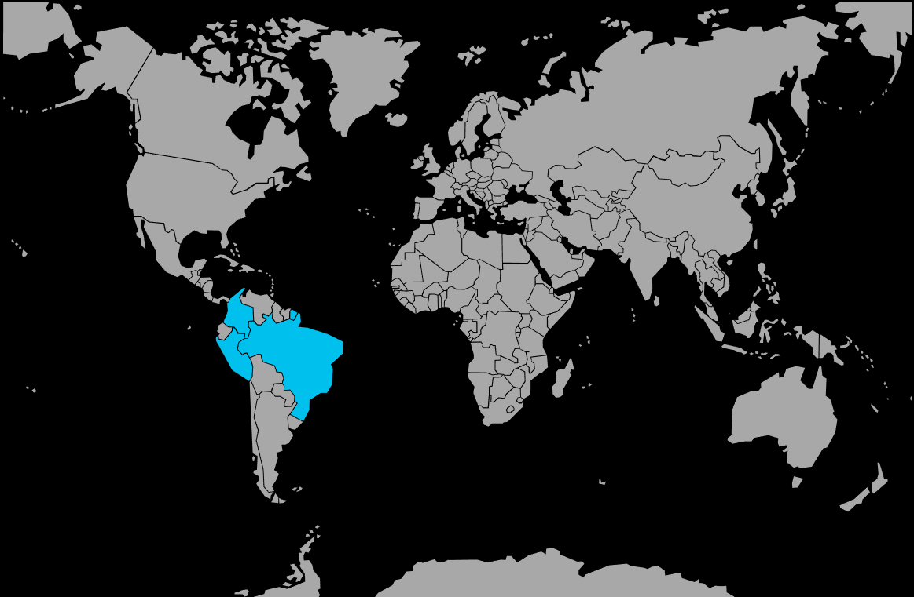

Systématique
- Ordre : Cichliformes
- Famille : Cichlidae
- Sous-famille : Cichlinae
- Genre : Pterophyllum
- Espèce : Pterophyllum scalare
Pterophyllum scalare est un cichlidé emblématique de l’Amazonie, apprécié pour sa silhouette haute et triangulaire et son comportement de banc lâche.
Les adultes atteignent environ 15 cm de longueur corporelle pour 18 à 20 cm de hauteur totale, ce qui impose un bac suffisamment haut.
L’espèce vit en groupe hiérarchisé, occupant surtout la zone médiane, où elle se déplace lentement entre les racines et les feuilles verticales.
Relativement paisible pour un cichlidé, elle devient toutefois territoriale en période de reproduction et peut prédater les très petits poissons et alevins.
Mode : pondeur sur support vertical (feuilles larges, racines, cônes, vitres), le couple nettoie soigneusement la surface choisie avant d’y déposer les œufs.
Les parents ventilent et protègent œufs et larves, puis rassemblent les alevins en nuage compact ; un bac spécifique augmente nettement les chances de succès.
Dimorphisme sexuel : peu marqué ; le mâle peut être légèrement plus massif, avec parfois une bosse nuptiale discrète et une papille génitale plus pointue en période de reproduction.
Espérance de vie : généralement 8 à 10 ans en aquarium, parfois davantage avec une maintenance soignée.
Dans la nature, Pterophyllum scalare fréquente les zones calmes et lentes de l’Amazone et de ses affluents, souvent inondées, très plantées, avec de nombreuses racines et branches immergées.
Répartition
Origine naturelle :
- Bassin de l’Amazone en Amérique du Sud (Brésil, Pérou, Colombie).
- Bras morts, zones inondées, forêts inondées et lagunes calmes fortement structurées.
L’espèce vit dans des eaux plutôt calmes, légèrement acides et souvent ambrées, avec une végétation et des racines denses servant de repères et de zones de ponte.
Paramètres de maintenance
Température : 24 à 28 °C.
pH : 6,0 à 7,0.
GH : 1 à 10 °dGH, eau douce à très douce.
Courant : faible, avec filtration efficace mais sortie de rejet adoucie.
Volume conseillé : à partir de 300–350 L pour un groupe de 5–6 individus, avec au moins 50 cm de hauteur d’eau.
Régime alimentaire
Régime : omnivore à tendance carnivore, acceptant granulés pour cichlidés, nourriture congelée (artémias, krill, vers) et un complément végétal occasionnel.
Une alimentation variée, distribuée en portions modérées, favorise une bonne croissance, des formes harmonieuses et limite les problèmes de surpoids.